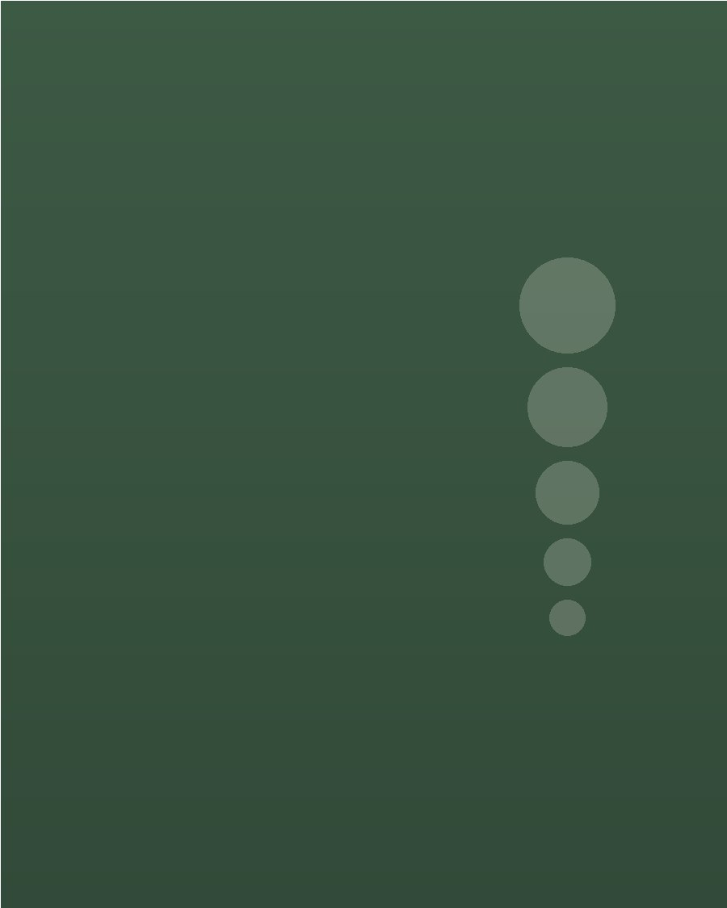
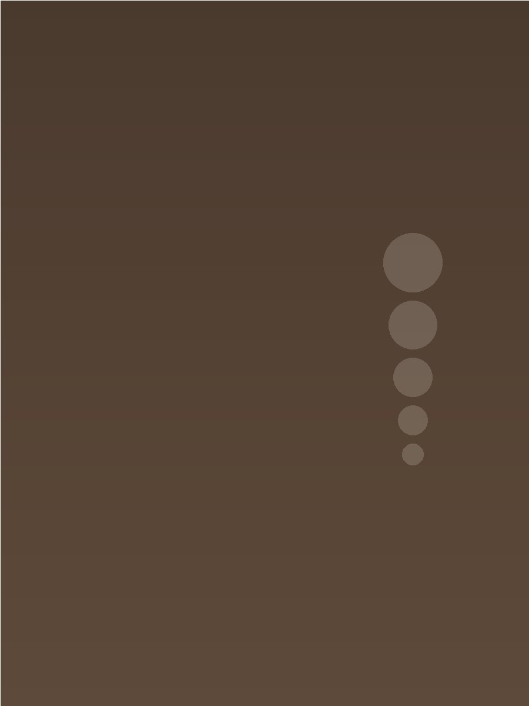
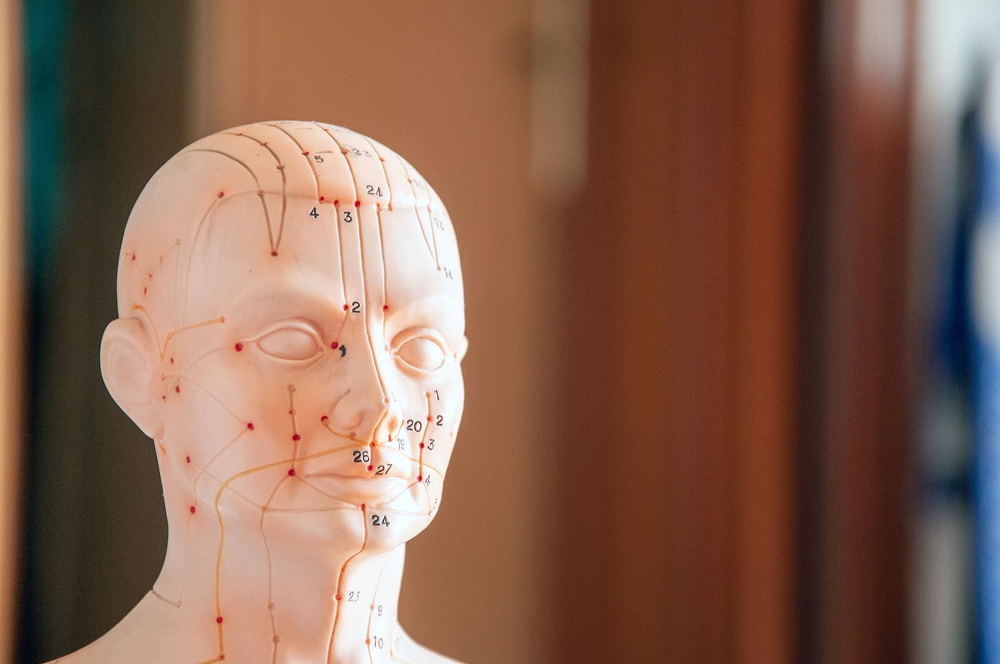

Um outro jeito de olhar para o corpo
Meridianos, Zang-Fu e diagnóstico pelo pulso e pela língua — os pilares de uma tradição milenar, explicados sem complicação.
Atendimento integrativo em Medicina Tradicional Chinesa para alívio de dores físicas e sintomas de ansiedade — olhando para corpo, mente e emoções como um só


A Medicina Tradicional Chinesa tem mais de dois mil anos — e, por trás do nome complicado, a lógica é simples: dor e ansiedade quase nunca aparecem isoladas, elas são sinais de um desequilíbrio que atravessa várias camadas da sua vida, não só o ponto onde incomoda. Meu trabalho é ler esses sinais com calma e construir com cada pessoa um caminho de cuidado que faça sentido pra vida dela.
Alívio de dores musculares, articulares e tensões crônicas através de técnicas manuais e energéticas.
Redução da ansiedade e da sobrecarga mental, com foco em regulação do sistema nervoso.
Escuta atenta de como elas se manifestam no corpo — e cuidado que respeita seu momento.
Em formação em Acupuntura e Medicina Tradicional Chinesa e formada em Auriculoterapia, ambos pelo CEATA, com formação complementar em Drenagem Linfática pela Cruz Vermelha, em Metodologia dos 8 Trigramas (Bagua Fa) por Marlon Hirata e Elixir de Cristais Terapêuticos com Rose Bissiato.
Nada de fórmula fixa: cada técnica tem uma lógica própria e elas são combinadas de acordo com o que cada corpo pede no momento.
Estímulo de pontos ao longo dos meridianos — os canais de energia mapeados pela Medicina Tradicional Chinesa há milênios. É a técnica mais tradicional da MTC e a base da minha formação, usada para reequilíbrio energético e alívio de dores e tensões.
Estímulo de pontos específicos na orelha, ligados a órgãos e sistemas do corpo, para reequilíbrio energético e alívio de sintomas físicos e emocionais.
Aquecimento suave de pontos dos meridianos com a moxa, com o intuito de ativar a circulação e aliviar dores de origem fria ou estagnada.
Técnica que cria uma pressão negativa, gerando uma troca gasosa que limpa o sangue das impurezas e promove o o descongestionamento de Qi e sangue nos canais de energia.
Manipulação manual dos tecidos para liberar tensão muscular, melhorar a mobilidade e proporcionar relaxamento profundo do sistema nervoso.
Movimentos suaves e ritmados que estimulam o sistema linfático, ajudam a eliminar toxinas, reduzem a retenção de líquido e trazem sensação de leveza ao corpo.
Os trigramas são símbolos formados por três linhas horizontais que combinam as energias Yin e Yang, representando as forças da natureza e os princípios do I Ching.
O atendimento é indicado para quem sente que dor física, desgaste emocional e até para prevenção.
Conversamos sobre sua história, seus sintomas e sua rotina. Avalio seu padrão energético — inclusive pela leitura da lingua e pulso — pra entender o que o seu corpo está mostrando.
A partir da avaliação, monto uma combinação de técnicas — acupuntura, auriculoterapia, moxabustão, ventosaterapia ou massagem — de acordo com o que faz sentido no seu caso.
Seguimos com sessões regulares, ajustando o plano conforme sua evolução, sempre com espaço pra você contar como o corpo está respondendo.
Saiba mais sobre as técnicas, os sintomas que trato e como a Medicina Tradicional Chinesa entende o seu corpo — informação que ajuda você a decidir com mais clareza antes de agendar.

Meridianos, Zang-Fu e diagnóstico pelo pulso e pela língua — os pilares de uma tradição milenar, explicados sem complicação.
Uma técnica milenar para dores de origem fria — explicada sem mistério, do que é feita até quando ela costuma ser indicada.
Um panorama simples sobre a visão integrativa da medicina chinesa e por que ela não separa dor física de desgaste emocional.
Resposta mais rápida — agende sua sessão por aqui
Acompanhe meu dia a dia, dicas e novidades
erikacampos.terapias@gmail.com
Todos os locais de atendimento possuem estacionamento conveniado.